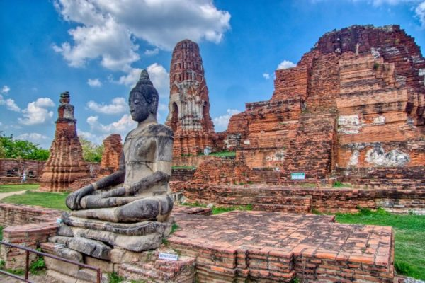

7.วัดมหาธาตุ
วัดมหาธาตุ สร้างขึ้นในสมัย สมเด็จพระบรมราชาธิราชที่ 1 ขุนหลวงพะงั่ว เมื่อปี พ.ศ.1917 แต่ไม่แล้วเสร็จดี พระองค์ทรงเสด็จสวรรคตเสียก่อน จึงได้สร้างเพิ่มเติมจนเสร็จสิ้น ในสมัยของ สมเด็จพระราเมศวร ค่ะ อีกทั้งได้โปรดเกล้าฯ ให้สร้าง พระปรางค์ประธาน และอัญเชิญ พระบรมสารีริกธาตุ มาบรรจุไว้ใต้ฐานพระปรางค์ประธานของวัดมหาธาตุ เมื่อปี พ.ศ.1927 ซึ่งปรากฏในพระราชพงศาวดารฉบับพระราชหัตถเลขา ทำให้ที่นี่เป็นวัดสำคัญอย่างมากในสมัยกรุงศรีอยุธยา นอกจากนี้ วัดมหาธาตุ ยังเป็นสถานที่สำคัญในการจัดพระราชพิธีต่างๆ ของกรุงศรีอยุธยา โดยมีสมเด็จพระสังฆราช ฝ่ายคามวาสีประทับอยู่ ทำให้ที่นี่เป็นศูนย์กลางของพระนครอีกด้วย ในสมัย สมเด็จพระเจ้าทรงธรรม ยอดพระปรางค์องค์เดิมที่สร้างด้วยศิลาแลง ได้ทลายลงมาเกือบครึ่งองค์ถึงชั้นครุฑ แต่ยังไม่ได้ซ่อมแซมในรัชกาลนั้น ต่อมา สมเด็จพระเจ้าปราสาททอง ทรงบูรณะใหม่ รวมเป็นความสูง 25 วา เมื่อปี พ.ศ.2176 และในสมัย สมเด็จพระเจ้าบรมโกศ เมื่อปี พ.ศ.2275-2301 จนถึงช่วงเสียกรุงศรีอยุธยาครั้งที่ 2 วัดมหาธาตุโดนทำลายจนเหลือเพียงซากปรักหักพังและถูกทิ้งร้าง